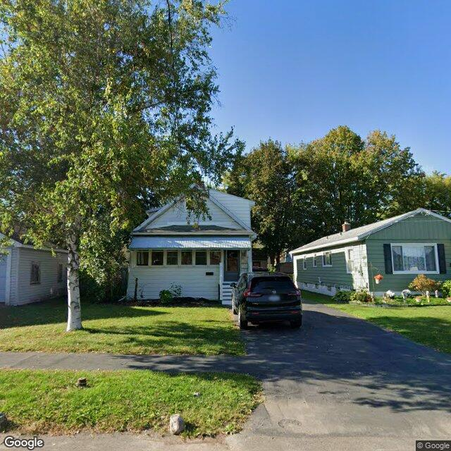

Property entry
101 Chatham Pl
Published 2026-09-26T15:02:56+00:00
Parcel key: 004-18-110

City records
Matches use parcel IDs, normalized addresses, or nearby coordinates. Confirm a match against the source record before relying on it. Publication dates are not source-data dates.
Vacant properties 1
- Latitude
- 43.08207733
- Longitude
- -76.14510575
- ObjectId
- 490
- Owner
- Charles Lilly
- OwnerAddress
- 841 Gwen Lane Cortland, NY 13045
- PropertyAddress
- 1126-28 Wadsworth St & Chatham Pl
Rental registry 0
No matches stored for this feed. The feed or address matching may be incomplete; this is not confirmation that no records exist.
Code violations 0
No matches stored for this feed. The feed or address matching may be incomplete; this is not confirmation that no records exist.
Unfit properties 0
No matches stored for this feed. The feed or address matching may be incomplete; this is not confirmation that no records exist.
AI image observations (unverified)
These observations are generated from an image, not an inspection or an official code finding. No human verification is recorded here.
Image capture date: Not recorded. The entry publication date does not establish the age of the image.
Automated image description
The property appears to be a single-family residence with a maintained lawn and a vehicle parked in the driveway.
Property type guess: single_family
Visible conditions
- Single-family residential structure.
- Light-colored siding, possibly vinyl or aluminum, appears to be in fair condition.
- Front porch with steps and railing visible.
- Windows on the front facade appear intact.
- Lawn appears to be maintained.
- A vehicle is parked in the driveway.
- A large tree partially obstructs the view of the left side and roof.
Condition scores
- Roof
- unclear
- Siding Or Facade
- fair
- Windows Doors
- good
- Porch Or Entry
- fair
- Yard Or Lot
- good
- Trash Debris
- none_visible
- Vegetation Overgrowth
- none_visible
Visible flags
- Boarded Windows Or Doors
- no
- Fire Damage Visible
- no
- Structural Damage Visible
- no
- Vacancy Signs Visible
- no
- Active Construction Visible
- no
Possible image-only flags
- Visible conditions, such as a maintained lawn and a parked vehicle, do not overtly suggest a vacant status, which may warrant further review given the known public record.
AI review boxes
- No items reported.
Review reasons
- AI requested human review
- Possible image-only issue
Image quality
- Available
- True
- Bytes
- 114010
- Needs Rerun
- False
['View of the roof is partially obstructed by a large tree.', 'The visible exterior conditions, including a maintained lawn and a parked vehicle, do not overtly suggest vacancy, which may differ from the known public record of a vacant property.']
ACS tract context
Census Tract 3; Onondaga County; New York
- Total population
- 1606
- Median household income
- 74716
- Poverty rate
- 18.7
- Housing units
- 708
- Vacancy rate
- 6.6
- Renter-occupied share
- 64.3
- Median gross rent
- 110100
OpenStreetMap nearby
meter search radius
OpenStreetMap lookup failed: HTTP Error 406: Not Acceptable